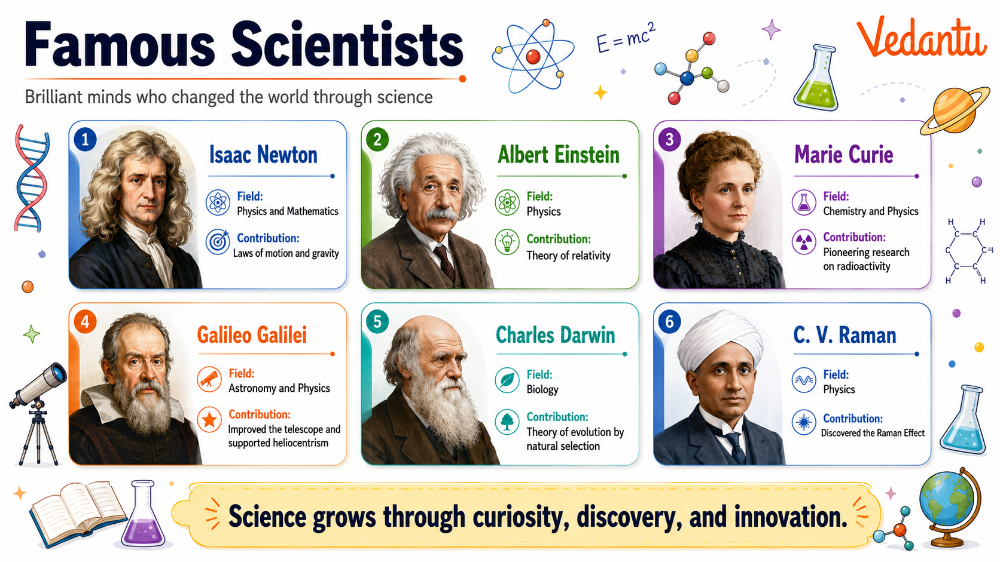
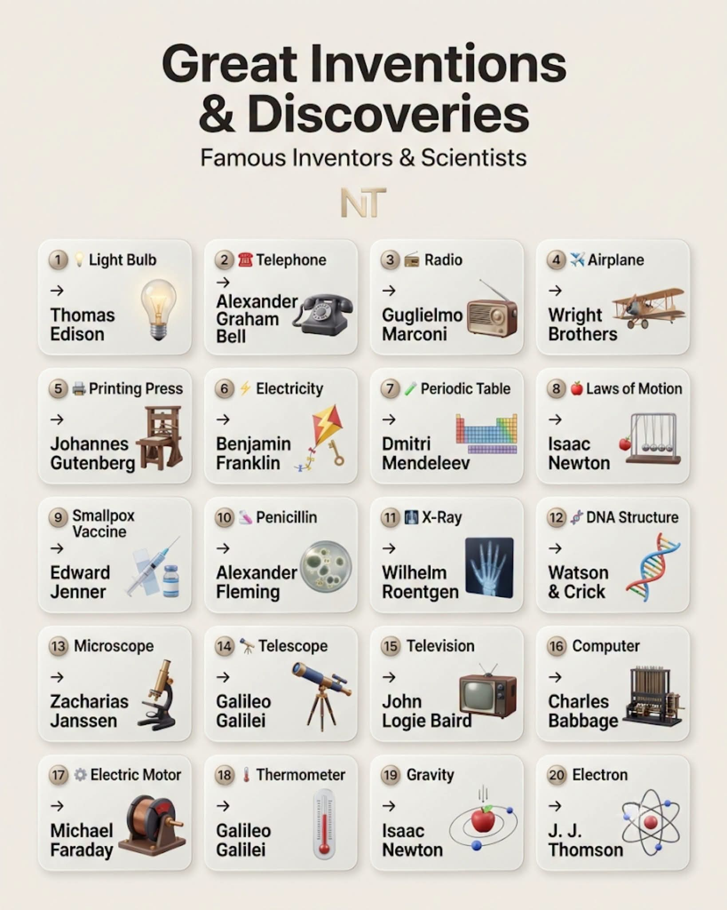
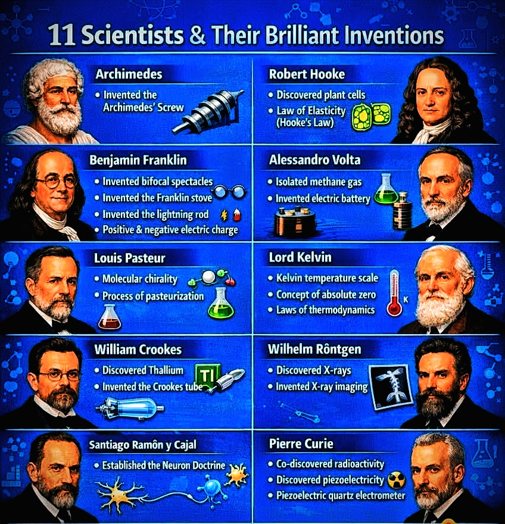
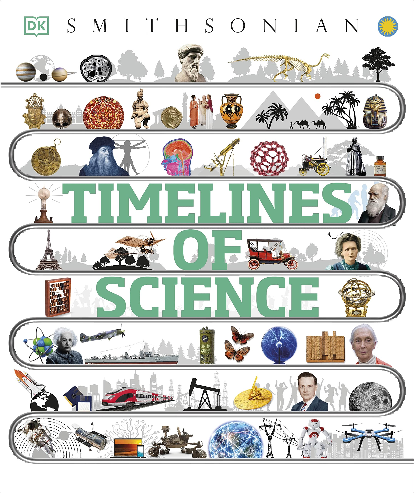
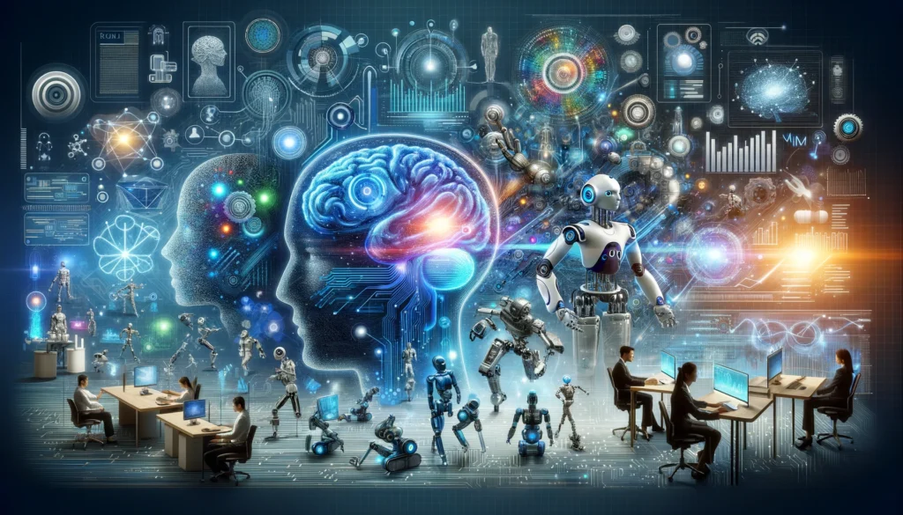

01
சக்கரம்
போக்குவரத்து மற்றும் இயந்திர வளர்ச்சிக்கு அடித்தளமாக அமைந்த மனிதனின் மிக முக்கியமான கண்டுபிடிப்பு.
பழங்காலம்மனிதனின் முதல் ஆர்வத்திலிருந்து செயற்கை நுண்ணறிவு காலம் வரை, அறிவியல் எவ்வாறு வளர்ந்தது என்பதை ஒரு பயணமாக அறிந்துகொள்வோம்.

மனிதன் இயற்கையைப் புரிந்துகொள்ளத் தொடங்கிய காலத்திலிருந்து இன்று செயற்கை நுண்ணறிவு வரை, அறிவியல் தொடர்ந்து நமது உலகத்தை மாற்றி வருகிறது.
உலகத்தைப் பற்றிய நமது புரிதலை மாற்றிய மகத்தான விஞ்ஞானிகளின் வாழ்க்கை மற்றும் சாதனைகளை அறிந்துகொள்ளுங்கள்.
கலிலியோ முதல் ஐன்ஸ்டீன் வரை, மேரி கியூரி முதல் சி.வி. ராமன் வரை, பல விஞ்ஞானிகள் தங்கள் ஆர்வம், சிந்தனை மற்றும் ஆராய்ச்சியின் மூலம் மனித அறிவை புதிய உயரத்திற்கு கொண்டு சென்றனர்.
ஒரு கேள்வியிலிருந்து தொடங்கும் அறிவியல் பயணம், பல தலைமுறைகளின் வாழ்க்கையையே மாற்றும் கண்டுபிடிப்புகளாக மாறுகிறது.
மனிதனின் சிந்தனை மற்றும் முயற்சியால் உருவான முக்கியமான கண்டுபிடிப்புகள் நமது வாழ்க்கையை எவ்வாறு மாற்றின என்பதைப் பார்ப்போம்.

சக்கரம் முதல் செயற்கை நுண்ணறிவு வரை, ஒவ்வொரு கண்டுபிடிப்பும் மனித வாழ்க்கையை புதிய திசைக்கு கொண்டு சென்றுள்ளது.
இந்த கண்டுபிடிப்புகளின் பின்னால் இருந்த சிந்தனை, ஆராய்ச்சி மற்றும் முயற்சிகளை அறிந்துகொள்வோம்.
போக்குவரத்து மற்றும் இயந்திர வளர்ச்சிக்கு அடித்தளமாக அமைந்த மனிதனின் மிக முக்கியமான கண்டுபிடிப்பு.
பழங்காலம்தொலைவில் உள்ள விண்மீன்கள், கோள்கள் மற்றும் விண்வெளிப் பொருட்களை ஆராய மனிதனுக்கு உதவிய கருவி.
வானியல்நவீன உலகின் பெரும்பாலான தொழில்நுட்ப வளர்ச்சிகளுக்கு அடிப்படையாக அமைந்த மிகப்பெரிய அறிவியல் முன்னேற்றம்.
ஆற்றல்தொலைவில் இருக்கும் மனிதர்களை உடனடியாக தொடர்புகொள்ளும் முறையை மாற்றிய கண்டுபிடிப்பு.
தொடர்புகம்பிகள் இல்லாமல் தகவல்களை தொலைதூரத்திற்கு அனுப்பும் தொடர்பு தொழில்நுட்பத்தின் முன்னேற்றம்.
தகவல் தொடர்புதகவல்களை கணக்கிடவும், சேமிக்கவும் மற்றும் செயலாக்கவும் உதவும் நவீன தொழில்நுட்பத்தின் அடித்தளம்.
கணினிஉலகம் முழுவதும் உள்ள மனிதர்களையும் தகவல்களையும் இணைத்த மிகப்பெரிய தொழில்நுட்ப மாற்றம்.
இணையம்தரவுகளிலிருந்து கற்றுக்கொண்டு, சிக்கல்களைத் தீர்க்கவும் மனிதர்களுக்கு உதவவும் உருவாக்கப்பட்ட நவீன தொழில்நுட்பம்.
AIவிஞ்ஞானிகள், கண்டுபிடிப்புகள், அறிவியல் கண்டுபிடிப்புகள் மற்றும் வரலாற்றை ஒரே இடத்தில் ஆராயுங்கள்.
பிரபஞ்சம், உயிரினங்கள், பொருள் மற்றும் இயற்கையின் விதிகளைப் பற்றிய நமது புரிதலை மாற்றிய முக்கியமான அறிவியல் கண்டுபிடிப்புகளைப் பார்ப்போம்.

ஈர்ப்பு விசை முதல் சார்பியல் கோட்பாடு வரை, பரிணாம வளர்ச்சி முதல் DNA வரை, ஒவ்வொரு அறிவியல் கண்டுபிடிப்பும் மனிதனின் உலகப் பார்வையை மாற்றியுள்ளது.
பொருட்கள் ஒன்றையொன்று ஈர்க்கும் இயற்கையின் அடிப்படை விசைகளில் ஒன்றை புரிந்துகொள்ள உதவிய அறிவியல் கண்டுபிடிப்பு.
உயிரினங்கள் காலப்போக்கில் எவ்வாறு மாற்றமடைந்து பல்வேறு வடிவங்களில் வளர்ந்தன என்பதை விளக்கும் கருத்து.
சில அணுக்கருக்கள் தன்னிச்சையாக கதிர்வீச்சை வெளியிடும் நிகழ்வை பற்றிய முக்கியமான அறிவியல் கண்டுபிடிப்பு.
வெளி, காலம், இயக்கம் மற்றும் ஈர்ப்பு பற்றிய மனிதனின் புரிதலை மாற்றிய ஆல்பர்ட் ஐன்ஸ்டீனின் முக்கிய கோட்பாடு.
உயிரினங்களின் மரபணு தகவல்களை சேமிக்கும் DNA பற்றிய புரிதல் நவீன உயிரியல் துறையை மாற்றியது.
அணுக்கள் மற்றும் துணை அணுத்துகள்களின் உலகில் இயற்கை எவ்வாறு செயல்படுகிறது என்பதை விளக்கும் நவீன அறிவியல் துறை.
மனித நாகரிகத்தின் ஆரம்ப காலத்திலிருந்து நவீன தொழில்நுட்ப காலம் வரை அறிவியல் எவ்வாறு முன்னேறியது என்பதைப் பார்ப்போம்.

மனிதர்கள் வானம், காலநிலை, தாவரங்கள், விலங்குகள் மற்றும் இயற்கை நிகழ்வுகளை கவனிக்கத் தொடங்கினர்.
கண்காணிப்பு, பரிசோதனை மற்றும் கணிதத்தின் அடிப்படையில் இயற்கையை ஆராயும் புதிய முறைகள் உருவானது.
இயற்பியல், வேதியியல், உயிரியல் மற்றும் பொறியியல் துறைகளில் மிகப்பெரிய முன்னேற்றங்கள் ஏற்பட்டன.
சார்பியல், குவாண்டம் இயற்பியல், விண்வெளி ஆராய்ச்சி மற்றும் கணினி தொழில்நுட்பம் வேகமாக வளர்ந்தன.
இணையம், பெரிய தரவுகள், மேம்பட்ட கணினிகள் மற்றும் செயற்கை நுண்ணறிவு அறிவியல் ஆராய்ச்சிக்கு புதிய வாய்ப்புகளை உருவாக்கின.

செயற்கை நுண்ணறிவு அறிவியல் ஆராய்ச்சியின் வேகத்தை அதிகரித்து வருகிறது. தரவுகளை பகுப்பாய்வு செய்வது முதல் புதிய கண்டுபிடிப்புகளை உருவாக்க உதவுவது வரை AI புதிய வாய்ப்புகளைத் திறக்கிறது.
அறிவியலின் அடுத்த அத்தியாயம் இன்னும் எழுதப்படவில்லை — அதை உருவாக்கப் போவது அடுத்த தலைமுறை சிந்தனையாளர்கள்.
இன்னும் எண்ணற்ற கேள்விகள், ஆராய்ச்சிகள் மற்றும் கண்டுபிடிப்புகள் நம்மை எதிர்பார்த்துக் கொண்டிருக்கின்றன.